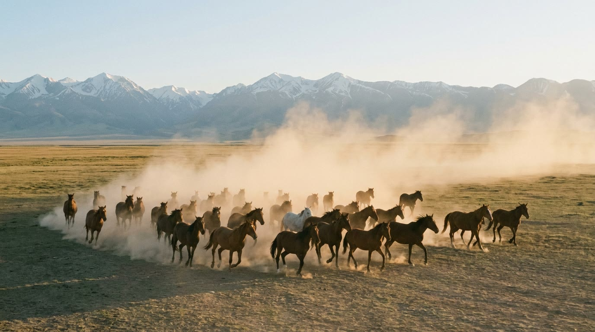

01
Central Asia · Kyrgyzstan
The eagle and the horizon
Ten nights across the Tian Shan, for a traveller who wanted to feel small again.
- Duration
- 10 nights
- Travellers
- Solo
- Best season
- June – Sept
- Dawn with the berkutchi. Two days with an eagle-hunting family on the shores of Issyk-Kul, sleeping in their private yurt.
- Kel-Suu on horseback. A turquoise lake reached only by horse, with a private camp at 3,200 metres.
- The night train east. A restored carriage to the edge of the Chinese border, dinner served as the steppe goes dark.
- A felt of your own. A shyrdak made by hand in a mountain camp, carried home in your luggage.
From US$18,400per person · private throughout
Design mine →